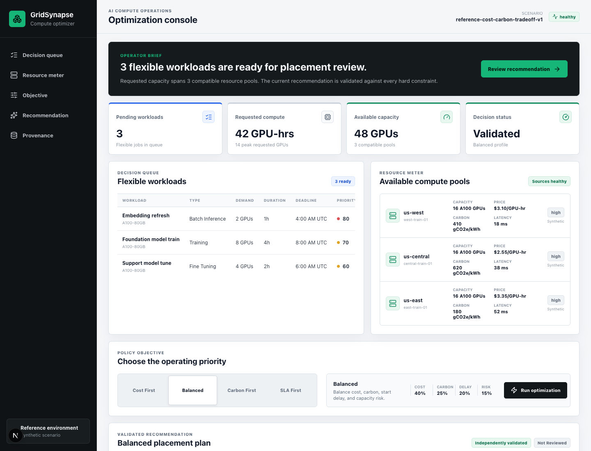
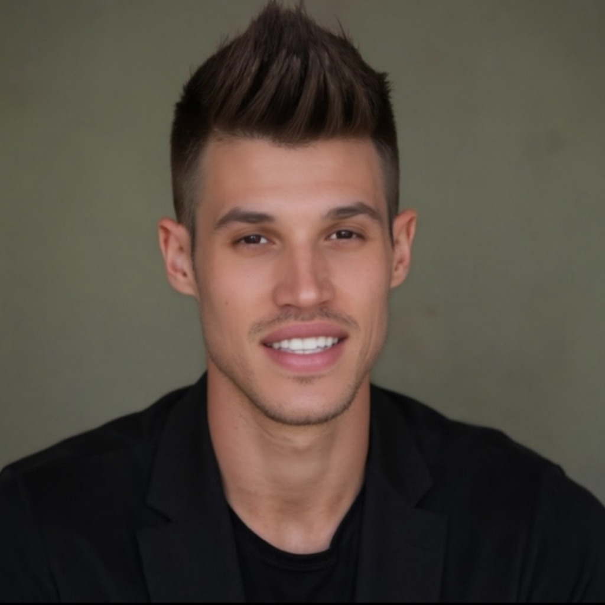

Selected case 02 / 04
GridSynapse
A buyer-side compute workflow that compares public price and carbon inputs, applies workload constraints, and produces an approval-ready plan.

AI product builder for crypto, fintech, and AI teams
I’m Elijah Paul. I shape the operating logic, design the experience, and build the working product—without hiding the decisions or the limits.
Answer four focused questions and review everything before sending.

A governed advisor workflow that turns a modeled opportunity into client materials and a human-confirmed operations handoff.
View case study →Idle-balance analysis, controlled routing, and handoff were fragmented.
Keep suitability and matching deterministic; use AI for explanation and materials.
Inspectable prototype using deterministic development data.
Strategy, workflow, UX/UI, architecture. No live client funds or autonomous execution.
The portfolio is the proof
Each case study shows what was stuck, what I decided, what now works, what I owned, and where a prototype ends.
Selected case 02 / 04
A buyer-side compute workflow that compares public price and carbon inputs, applies workload constraints, and produces an approval-ready plan.
